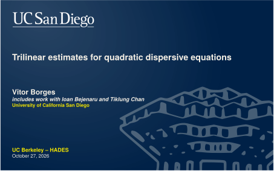
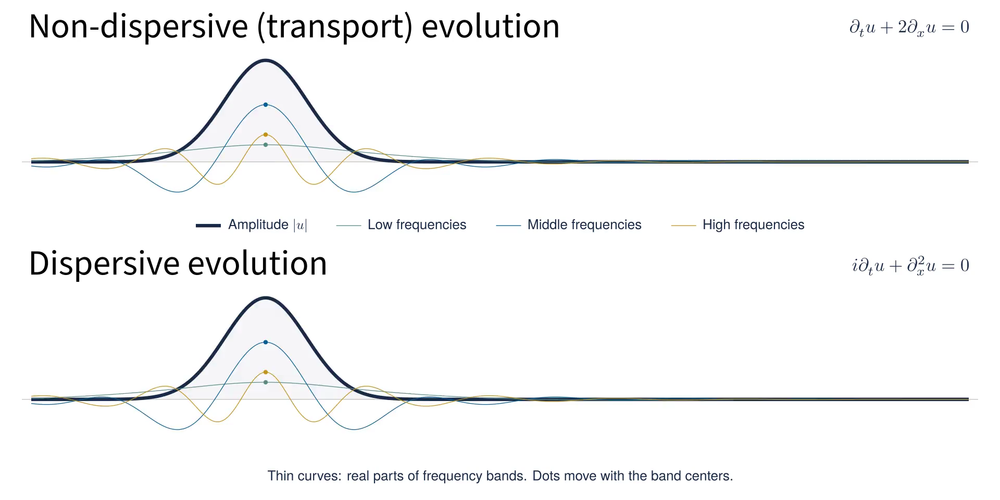

F: present full screen · Esc: exit · H: controls · P: clean window · ← / →: reveals · Space: play/pause · R: restart · D: diagnostics
All media is inside this file. No assets folder, server, or internet is used.